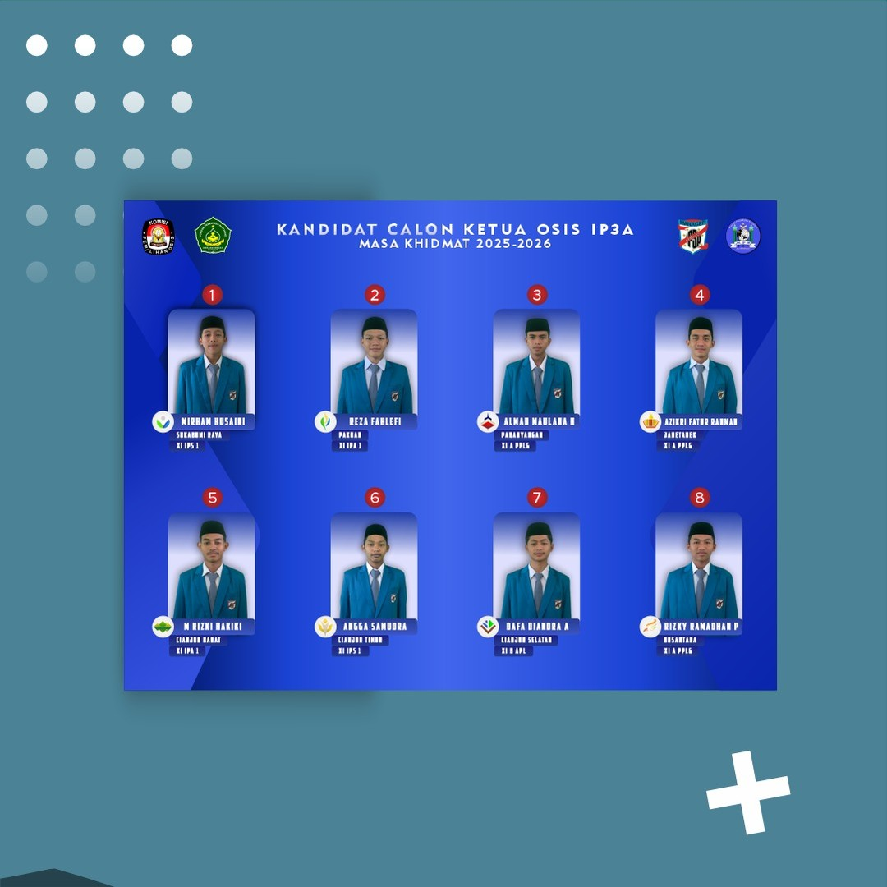
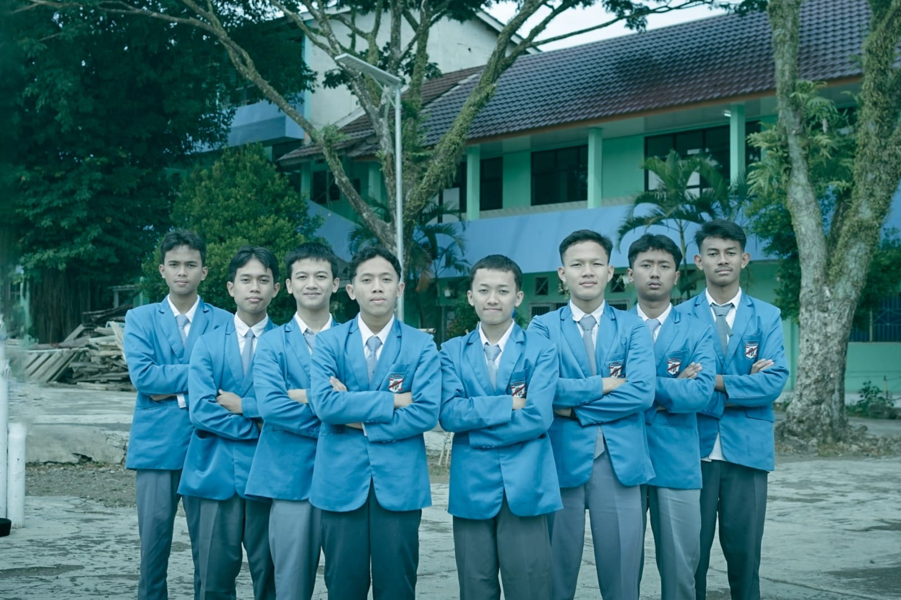

Alman Maulana
Wakil OSIS II
OSIS SMK AL-ITTIHAD
Wakil Ketua OSIS II
Periode 2024 - 2025
OSIS (Organisasi Siswa Intra Sekolah) adalah organisasi resmi di tingkat sekolah yang berperan sebagai wadah bagi siswa untuk mengembangkan potensi, karakter, dan jiwa kepemimpinan melalui berbagai program kerja nyata.
Tugas & Tanggung Jawab
- Menggantikan tugas Ketua Umum atau Wakil Ketua I apabila sedang berhalangan hadir.
- Mengoordinasi divisi/sekbid di bawah tanggung jawab langsung untuk mendukung program sekolah.
- Menyusun rencana strategis dan memimpin jalannya program kerja tahunan organisasi.
- Menjadi jembatan komunikasi yang efektif antara aspirasi siswa dengan kebijakan pihak sekolah.
Kemampuan yang Terasah
Dokumentasi Kegiatan

2 Foto
Orasi

1 Foto
BPH

2 Foto